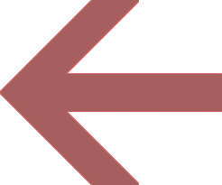

| 「なぜ人生は思い通りにならないのだろう」と思ったら読む本 | |
| 棚田克彦 | |
| (2017) | |
私たち人間が人生を生きる様子を観察してみると、世の中に存在する二通りの生き方のうち、どちらかを選んで生きているようです。
・自分の夢や願望に向かって一歩、一歩、自分の思い通りの人生を着実に実現しながら生きている人
・「この出来事さえなかったら・・・」「あれさえ上手く行っていれば・・・」「こんなはずではなかったのに・・・」と、自分の思い通りにならない人生に落胆と後悔を繰り返しながら生きている人
あなたはどちらの人生を生きていますか？
「成功したい」「幸せになりたい」「恋愛・結婚したい」「お金が欲しい」「健康になりたい」・・・・等など、夢や願望の実現を望む気持ちは万国共通、みな同じです。
ところが、自分の夢や願望を自分の思い通りに実現しながら理想の人生を生きている人もいれば、その一方で、決して努力を怠っているわけではないのに、いや、それどころか人並み以上に努力を積み重ねて来ているというのに、どういうわけか自分の思い通りにならない人生を繰り返している人もいます。
こうした全く異なる二通りの生き方をしている両者の間で、一体何が違うのでしょうか？
願望の強さや努力の有無とは関係なく、人生が自分の思い通りにならないのは何が原因なのでしょうか？
どうすれば思い通りの人生を実現できるのでしょうか？
その答えが本書の中にあります。
心理セラピスト 棚田克彦
「なぜ人生は思い通りにならないのだろう？」と思ったら読む本
◆ はじめに
第１章 人生が思い通りにならないとき、「これ」が起きている
第２章 「引き寄せの法則」の真実
第３章 パーソナルヒストリカルトラウマとは何か？
◆ あなたの運命は15 歳で決まる
◆ 【事例１】「どうせ私は愛されない」
◆ 【事例２】「本当は男性が怖い」
◆ 【事例３】「お母さんへの復讐」
◆ 【事例４】「私はこの世に存在してはいけない（うつ病患者）」
第４章 トランスジェネレーショナルトラウマとは何か？
◆ トラウマは時空間を超える
◆ 【事例１】「お母さんかわいそう！」「お父さん大嫌い！」
◆ 【事例２】「本当は父親を心から愛していた・・・」
◆ 【事例３】「お母さんよりも幸せになるのは申し訳ない」
◆ 【事例４】「私も大切な人の愛を失います・・・」
◆ 【事例５】「幸せになる勇気」
◆ 【事例６】「あなたたちの死を尊重します・・・」
◆ 【最重要チェックリスト】トランスジェネレーショナルトラウマの原因
第５章 思い通りの人生を実現するために
『自分でできるトラウマ診断チェックシート』
＆ 『誰にも知られずに一人でできるトラウマ解消ワークシート』
あなたの人生で自分の思い通りにならないことがあるとしたら・・・
その原因を簡単な質問に順番に答えるだけで発見できるチェックシートをご用意いたしました。
さらに、発見した原因を誰にも知られることなくこっそりと一人で解消できるワークシートもお付けいたします。
人生が思い通りにならない原因を発見・解消して、自分らしい成功や幸せを手に入れられた方々の体験談も参考にして下さい。
本書と合わせて読み進めることで、あなたの心の悩みや症状、問題の解消にお役立て下さい。
ダウンロード用ＵＲＬ：
https://www.agentmail.jp/form/pg/7916/2/
心理セラピスト 棚田克彦
「人生が思い通りにならないっ！」と思い悩んでいるあなたが、まず一番最初に学ばなければならないことは、「人間の運命には『変えられないもの』と『変えられるもの』とが存在する」という事実です。
例えば、あなたがこの地球上で、どの時代に、どの国に生まれるか、父親が誰で、母親は誰か、何番目の子どもとして生まれるか、性別は男か女か、健康に生まれるか、先天的な病気や障害を持って生まれるか等、そうしたことはあなたがこの世に誕生した後で自分の思い通りに変えることはできません。
また、あなたがこの世に誕生した後にあなたの身に起きた出来事の中にも、変えられない運命は存在します。
例えば、あなたがお父さんやお母さんから十分な愛情を与えられて優しく大切に育てられたのか、それとも、十分な愛情を与えられることなく酷い目に遭ったのか、お父さんとお母さんは仲の良い夫婦だったのか、それとも、いつもケンカばかりしている仲の悪い夫婦だったのか、それらは小さく非力な子どものあなたにはどうすることもできなかった出来事であり、変えられない運命の一部です。
一方、もしあなたが「私は小さい頃、両親から愛されなかった。むしろ酷い目にばかり遭わされていた（例えば、暴力を受けて育った）」等という理由から、大人になった現在も自分のことを大切にしてくれない人物を選んで好きになったり、自分に酷い扱いをする人物との関係を止めずに続けているとしたら、それはあなたがそのような生き方を選択し続けているから今も繰り返しているだけのことであり、本当は変えられるはずの運命です。
「私が子どもの頃、両親はいつもケンカばかりしていたので、私は結婚というものに対して良いイメージがありません」という理由から、大人になった現在も恋愛・結婚で失敗を繰り返し、幸せな結婚を諦めているあなたがいるとしたら、それはあなたがそういう生き方を選択し続けているからそうなっているだけのことであり、本当は変えられるはずの運命です。
「人間の運命には『変えられないもの』と『変えられるもの』とが存在します」と、なぜ私がこんな当たり前のことを言うのか、おわかりでしょうか？
それは、「変えられる運命」を変えられないものと諦めて変えようとせず、「変えられない運命」を変えようとして、「どうして人生は思い通りにならないのだろう？」と思い悩む人たちをたくさん見てきたからです。
「変えられない運命」を変えようとすることは、不可能を可能にしようとする試みです。
不可能を可能にしようとする試みは必ず失敗し、あなたに悩みや問題をもたらします。
運命には自分の思い通りにならないこと、どうしようもないこと、避けられないことがあります。
そういう運命に対して、「これさえなかったら・・・」「あれさえあったら・・・」「こんなはずではなかったのに・・・」と言ってみたり、抵抗してみたところで、現実が変わることは決してありませんし、「変えられない運命」に対して抵抗をすればするほど自分が辛くなるだけです。
だとすれば、「変えられない運命」は素直に受け入れて、それに従う方がずっと賢明です。
そうすることのメリットは、今まで「変えられない運命」に抵抗することで浪費されていたあなたの大切なエネルギーを、そこから解放することができることです。
そして、解放されたエネルギーを「変えられる運命」を変えることに集中させるのです。
確かに、あなたは自分の人生に起こる出来事の全てを自分の思い通りにコントロールすることはできません。
しかし、あなたの人生の幸福や不幸は、あなたの身に起きた出来事だけで完全に決定されるわけではありません。
あなたの人生の幸福・不幸は、あなたの身に起きた出来事に対して、あなたがどのように反応するかで決まります。
ですから、「変えられない運命」や避けられない出来事に見舞われた場合には、それに抵抗することなくあるがままの現実を受け入れましょう。
そして、あなたの身に起きた出来事に対してより望ましい反応の仕方ができるように、あなたの持っているエネルギーの全てを「変えられる運命」を変えることに集中させるのです。
・「変えられない運命」には抵抗することなく、あるがままの現実を素直に受け入れる。
・持っているエネルギーは全て、「変えられる運命」を変えることに集中させる。
「変えられない運命」には抵抗することなく、あるがままの現実を素直に受け入れることです。
「変えられない運命」を変えようとしてエネルギーを無駄に浪費しないことです。
では、運命の変えられる部分についてはどうでしょうか？
自分の理想や「なりたい自分」に向かってより望ましい選択をすることで、思い通りの人生を実現できるはずです。
そうすれば、自分の思い通りの運命を生きられるはずです。
では、運命はどのようにして決まるのか、どうすれば思い通りの人生を実現できるのか、詳しく見てみることにしましょう。
この世に生まれてから現在まで、私たちの人生は選択の連続です。
Ａにするか？ Ｂにするか？
右にするか？ 左にするか？
進学するか？ 就職するか？
進学するならば、どの学校に行くか？
就職するならば、どの会社に入るか？
何を食べるか？ 食べないか？
結婚するか？ 独身を貫き通すか？
結婚するなら誰とするか？
離婚するか？ 我慢し続けるか？
手術をするか？ 自然に任せるか？
その都度、その都度、「選択」を積み重ねてきた結果が「今の自分」です。
あなたは「今の自分」に満足していますか？
私たち人間の運命は、決して神様が振ったサイコロで決まる訳ではありません。
あらゆる「選択」には、必ず「結果」が伴います。
長年にわたり日々の「選択」とその「結果」が積み重なって、人生を後から振り返ったときにそれを私たちは運命と呼ぶのです。
つまり、「あなたの選択があなたの運命を決める」ということです。
ですから、もしもあなたが自分の運命を変えたいと望むのであれば、「あなたの運命は、他ならぬ、あなた自身が作っている」、従って、「あなたの運命を変えられる唯一の方法は、あなたの選択を変えることである」という普遍の真実を受け入れて、深く心に刻み込んでおく必要があります。
・あなたの選択があなたの運命を決める。
・あなたの運命を変えられる唯一の方法は、あなたの選択を変えることである。
あなたの運命は、他ならぬ、あなた自身が作っています。
だから、運命の変えられる部分、すなわち、「変えられる運命」を変えることで自分の思い通りの人生を実現できるはずです。
にもかかわらず、世の中には自分の思い通りの幸福な人生を生きている人もいれば、その一方で、自分の思い通りにならない不幸な生き方を繰り返している人もいます。
幸運な人と不運な人とでは、一体、何が違うのでしょうか？
なぜ人は幸福を願いながらも、ときに不幸な運命（生き方）を選択してしまうことがあるのでしょうか？
あなたがこの世に生まれてきた理由、それは"幸せになるため"です。
決して他人や社会から厳しい罰を受けたり、自分イジメをしたり、事故や怪我、病気等を経験して不幸な運命を生きるためにこの世に生まれてきた訳ではありません。
にもかかわらず、しばしば人は愚かな行動を自ら繰り返し、自分で自分を苦しめるような生き方を選択することがあります。
例えば、
【仕事】
・「やりたいこと」や「なりたい自分」へと向かうチャンスを自ら避けたり、遠ざけたりしている。
・「ここ一番」の大事な場面で失敗を繰り返す。努力が成果につながらない。何をどんなに頑張っても報われない人生を生きている。
【恋愛・結婚】
・「恋人が欲しい」「早く結婚したい」と強く願いながらも、チャンスが巡って来ると一歩を踏み出せない。
・恋愛や結婚の対象として自分が幸せになれない相手、自分を大切に扱ってくれない相手を選んでしまう。ハラスメントや浮気、暴力（ドメスティック・バイオレンス）を繰り返し経験している。
【人間関係】
・人と親密になれない。いつも孤独を感じている。寂しいのに仲良くなってくると自分の方から壁を作る。
・いつも損な役回りを引き受けてばかりで苦労が絶えない。周囲のために自己犠牲を強いられている。
・職場、家庭、友人の仲間内等、どこにいても安心できる自分の居場所がない。いつも除け者にされたり、邪魔者扱いされる。
・常に戦いの人生を生きている。
・自分の本当の居場所はどこか別の世界にあるような気がしている。
【健康】
・過労による入院や胃潰瘍、うつ病の再発を繰り返している。
・生命を脅かす程の深刻な病気や難病を患っている。これまでの人生で大きな怪我や事故を繰り返している。
・出所のわからない深い悲しみや憂鬱な気持ち、孤独感や喪失感をずっと抱えて生きている。
・死にたい気持ちや消えていなくなってしまいたい気持ちに襲われることがある。
【冨（お金）】
・幸せになることや成功することに躊躇や罪悪感がある。
・不思議なことに、不幸な現状にどこか安心感や懐かしさを感じる。
・お金に関する苦労や争いごとが絶えない。お金を持つと不安になる。
・・・等など。
不幸な運命を意識的に選択する人はいません。
ところが、自分に悩みや苦しみを与える生き方を無意識に選択したり、自分を幸福や健康から遠ざける生き方を無意識に選択する人は大勢いるのです。
多くの人がそうであるように、もしかするとあなたも自分が行ってきた「運命の選択」に気付いていないかもしれません。
本当に不思議なことですが、人生で繰り返される不幸なパターンの多くは、無意識であることが多いものの、本人が自ら選択した生き方によってもたらされたものなのです。
つまり、私たちが「人生（運命）が思い通りにならない」と感じるとき、自分では自分の選択が思い通りにならないがために、「自分で自分に苦痛を与えている」「自分で自分を成功や幸福、健康から遠ざけている」という事実が存在します。
・あなたがこの世に生まれてきた理由、それは、"幸せになるため"である。
・にもかかわらず、しばしば人は自ら不幸な運命(生き方）を選択し、自分で自分を苦しめることがある。
・人生（運命）が思い通りにならないのは、自分で自分の選択が思い通りにならないからである。
「人生（運命）が思い通りにならない」と感じるとき、それは、無意識の選択によって自ら幸福を避けたり、不幸を求めてしまっていることに原因があります。
本来、"幸せになるため"にこの世に生まれてきたはずのあなたに、一体、何が起きているのでしょうか？
あなたの脳はあなたに対して、《苦痛を避けて、快楽を求める》選択をするように仕向けます。
幸福な人は、幸福な生き方に快楽を感じます。
幸福な人は、不幸な生き方に苦痛を感じます。
その結果、幸福な人は不幸な生き方を避け、幸福な人生を選択します。
一方、不幸な人は、幸福な生き方に苦痛（不安、罪悪感、不相応感等）を感じます。
不幸な人は、不幸な生き方に快楽（安心、納得感等）を感じます。
その結果、不幸な人は幸福な生き方を避け、不幸な人生を選択するのです。
運命選択のメカニズム
私たち人間は、「苦痛を感じる生き方を避け、快楽を感じる生き方を選択する」
幸福な人
幸福な生き方 ＝ 快楽 → 幸福を求める → 幸福になる
不幸な生き方 ＝ 苦痛 → 不幸を避ける → 不幸にならない
不幸な人
幸福な生き方 ＝ 苦痛 → 幸福を避ける → 幸福になれない
不幸な生き方 ＝ 快楽 → 不幸を求める → 不幸になる
不幸な人、不運に見舞われることが多い人には以下のような共通点があります。
すなわち、
・自分の好きな、やりがいのある仕事を見つけて、自分らしく仕事をすること
・人を愛すること。人から愛されること
・愛する人と結婚をして家庭を持つこと。子育てをすること
・人と親密な人間関係を築くこと
・自分の心や身体を大切にすること
・お金を稼ぐことや、裕福な生活をすること
・・・等など、「本来であれば自分に幸福感をもたらしてくれるはずの幸せな生き方に対して苦痛を感じてしまう」という問題を抱えていることです。
実際、私の元にセラピーを求めて来られるクライアントの中には、「幸せになると不安になる」「楽しいことをしていると罪悪感がする」「人を愛したり、人から愛されるのが怖い」という人がたくさんいらっしゃいます。
そうした人たちは、意識では幸福を願いながらも、無意識の心では不幸な生き方を求めて不幸な現状に安心している自分がいるのです。
・私たち人間は、「苦痛を感じる生き方を避け、快楽を感じる生き方を選択する」
・不幸な人、不運な人は、「本来であれば自分に幸福感をもたらしてくれるはずの幸せな生き方に対して苦痛を感じてしまう」という共通の問題を抱えている。
仕事、恋愛・結婚、人間関係、健康、冨（お金）等、あなたの人生は「苦痛を感じる生き方を避け、快楽を感じる生き方を選択する」という運命選択のメカニズムによって作られます。
運命選択のメカニズムによると、幸福な人は幸福であることに快楽を感じるから幸福な生き方を選択し、一方、不幸な人は幸福であることに苦痛を感じるから幸福を避け、不幸であることに快楽を感じるから不幸な生き方を選択することがわかります。
つまり、「あなたが何に対して快楽を感じ、何に対して苦痛を感じるかによって、あなたの運命（人生）は決まってしまう」「あなたの人生はあなたが快楽を感じるもので満たされ、苦痛を感じるものは失われていく」ということが言えます。
これが引き寄せの法則の真実です。
あなたが幸福になるためには、あなたの人生に何が起きる必要がありますか？
あなたが理想とする生き方はどのようなものですか？
・自分の好きな、やりがいのある仕事を見つけて、自分らしく仕事をすること
・人を愛すること。人から愛されること
・愛する人と結婚をして家庭を持つこと
・子供を産んで、子育てをすること
・人と親密な人間関係を築くこと
・病気や体調不良を治して健康になること
・お金を稼ぐことや裕福な生活をすること
そうした理想の生き方を実現している自分を想像してみてください。
どんな感じがしますか？
心の中で何と言っていますか？
快楽（自然、楽、楽しい、うれしい、幸せ等）を感じますか？
それとも、苦痛（不安、緊張、恐れ、罪悪感、自分らしくない、私には無理等）を感じますか？
もし、理想の生き方をすることに苦痛を感じるあなたがいるとしたら、あなたの人生が思い通りにならないのは、あなたが自らの選択によって幸福な生き方を避け、不幸な生き方を選択していることに原因があります。
このとき、あなたが理想の生き方を実現して幸福な人生へと転換を図るためには、「自分が理想とする生き方に対して苦痛（不安、緊張、恐れ、罪悪感、自分らしくない、私には無理等）を感じてしまう」という間違った感じ方の問題を解決しなくてはなりません。
あなたの感じ方が変わることで、あなたの運命（人生）は変わります。
・あなたが何に対して快楽を感じ、何に対して苦痛を感じるかによって、あなたの運命（人生）は決まる。あなたの人生はあなたが快楽を感じるもので満たされ、苦痛を感じるものは失われる（「引き寄せの法則」の真実）
・運命（人生）を変えるためには、生き方に対する感じ方（快楽／苦痛）が変わる必要がある。
本来、私たち人間はみな、《幸福な生き方に快楽を感じ、不幸な生き方に苦痛を感じる》ようにプログラムされてこの世に誕生します。
つまり、私たち人間が不幸を避けて心身ともに幸福な人生を生きることは、何か特別な能力や資質を要することではなく、自然の摂理に則（のっと）った、ごく自然で当たり前のことです。
にもかかわらず、幸せであることに不安感や罪悪感を感じて幸福な人生を避けてしまう人がいるなぜでしょうか？
不幸な現状に安心感や納得感を感じて、そこにとどまり続ける選択をする人が多いのはなぜでしょうか？
私たち人間の人生には、理性的な頭で合理的に考えたときに、一見しただけでは理解不可能な繰り返し行動が見られる場合があります。
「幸せになりたいと願いながらも、本当に幸せになることには不安や罪悪感を覚えて避けてしまう」
「愛されたいと望みながらも、自分を愛してくれない人ばかりを選んで好きになってしまう」
「成功したいのに、『私は成功者の器ではない』と諦めている」
「早く病気を治して健康になりたいけれども、心の深いレベルでは健康に自信が持てない」
そんな矛盾を心に抱えた人はたくさんいます。
このように、「頭では幸福を願いながらも、心は幸福であることに苦痛を感じて避けてしまう」「結局、不幸であることに安心（納得）して、最後は不幸を選択してしまう」という状態にあるとき、そこにはトラウマの存在が影響しています。
未解消のトラウマを抱えた状態にある人は、「幸福な生き方に苦痛（不安、罪悪感等）を感じ、不幸な生き方に快楽（安心感、納得感等）を感じてしまう」という生き方に対する感じ方の問題を同時に抱えています。
ですから、もしあなたが不幸な生き方を避けて幸福な生き方を選択することで思い通りの人生を生きたいと願うのであれば、その障害となっている原因のトラウマを解消することが一番確実で、一番の近道な、唯一の道です。
トラウマを解消すると運命が変わる
トラウマを抱えている人（不幸な人）
幸福な生き方 ＝ 苦痛 → 幸福を避ける → 幸福になれない
不幸な生き方 ＝ 快楽 → 不幸を求める → 不幸になる
|  |
トラウマを解消して感じ方が変わると運命が変わる |
健康な人（幸福な人）
幸福な生き方 ＝ 快楽 → 幸福を求める → 幸福になる
不幸な生き方 ＝ 苦痛 → 不幸を避ける →不幸にならない
・頭では幸福を願いながらも、結局は幸福を避け、不幸な人生を選択してしまうとき、そこにはトラウマの存在が影響している。
・トラウマを抱えた状態にある人は、「幸福な生き方に苦痛を感じ、不幸な生き方に快楽を感じてしまう」という生き方に対する感じ方の問題を同時に抱えている。
・運命(人生）を変えるためにはトラウマを解消して感じ方の問題を解消することが一番確実で、一番の近道な、唯一の道である。
トラウマを抱えた状態にある人は、幸福であることに苦痛（不安、罪悪感等）を感じる一方で、不幸であることに快楽（安心感、納得感等）を感じてしまうという感じ方の問題を抱えています。
その結果、トラウマを抱えた人は幸福を願いながらも幸福を避け、無意識に不幸な生き方を求めて選んでしまうという運命の選択を一生涯にわたって繰り返します。
未解消のトラウマを抱えたままの状態にある人が、「人生が思い通りにならない」「がんばっても、がんばっても、うまく行かない」「努力をすれば、するほど、努力が裏目に出る」という困難を人生で繰り返し経験するのはそのためです。
ですから、あなたが自然に不幸を避けて幸福な生き方を選択できるようになるための一番確実で、一番近道な、唯一の方法は、原因のトラウマを解消することです。
あなたが本来、生まれながらに持っている、《不幸を避けて、幸福を求めて選択する》能力を阻害する要因として、２種類のトラウマが存在します。
あなたも詳しい言葉の意味は知らなくとも、トラウマという単語くらいは何となく聞いたことがあるかもしれません。
トラウマとは、「大きな精神的ショックや恐怖が原因で起きる心の傷。精神的外傷」のことを指します。
・トラウマを抱えた状態にある人は、幸福を願いながらも幸福を避け、無意識に不幸な生き方を求めて選んでしまう。
・不幸を避けて幸福を求めて選択する能力を阻害する要因には、２種類のトラウマが存在する。
・「人生が思い通りにならない！」という問題を解決するための一番確実で、一番近道な、唯一の方法は、原因のトラウマを解消することである。
私たち人間が生まれながらに持っている不幸を避けて幸福を選択する能力を阻害する要因には２種類のトラウマが存在します。
その１つ目は、「パーソナルヒストリカルトラウマ（personal historical trauma）」と呼ばれるものです。
パーソナルヒストリカルトラウマとは、あなたがこの世に生まれてから現在までの間に経験した「個人の生育歴上のトラウマ」を指します。
あなたが過去に経験したパーソナルヒストリカルトラウマの記憶は、あなたの無意識の心の中に記憶されます。
あなたが15 歳までに経験したパーソナルヒストリカルトラウマが、あなたの運命（人生）を決定することがわかっています。
つまり、あなたが一生涯を通じて、「仕事でどのようなパターンの成功と失敗を繰り返し経験するか？」「恋愛・結婚でどのようなパターンを繰り返すか？」「どのような病気を繰り返すか？」「お金で苦労するか、しないか？」、そして、究極的には「人生の終末はどのようなものか？」といったあなたの運命は、信じがたいことかもしれませんが、「あなたがこの世に生まれてから15 歳頃までの間に決まってしまう」ということが知られているのです。
・あなたの運命は、あなたがこの世に生まれてから15 歳頃までの間に経験したパーソナルヒストリカルトラウマ（生育歴上のトラウマ）によって決定される。
パーソナルヒストリカルトラウマが具体的にどのようなものか、それがどのように私たち人間の運命に影響を及ぼすのかは、実際のセラピーの事例を見ていただくのが良いでしょう。
以下は、パーソナルヒストリカルトラウマが恋愛・結婚運に与える影響の事例です。
【パーソナルヒストリカルトラウマ事例】
Ａ子さん（仮名：39 歳、女性）は結婚を望んでいます。
ところが、結婚を前提にしたお付き合いをするところまではたどり着くものの、次第に二人の関係が深まってくると、自分の側の不用意な発言や行動がキッカケとなって相手の男性を怒らせてしまい、相手から嫌われて別れてしまうことを繰り返しています。
直近の恋愛で相手の男性から婚約を破棄されてしまったことからセラピーの相談にみえられました。
セラピーによって明らかになったのは、Ａ子さんの無意識の心の中に「どうせ私は愛されない」というビリーフ（無意識レベルの思い込み、固定観念）が存在することでした。
この無意識の心の中に埋め込まれたビリーフが、パーソナルヒストリカルトラウマの影響です。
その原因を探っていくと、Ａ子さんがまだ小さい子どもの頃に父親から、「お父さんは本当は男の子が欲しかった」「お前が女の子とわかってガッカリした」と繰り返し聞かされていた記憶が出てきました。
Ａ子さんの実家は石川県にあり、お父さんは後取りとしての長男がずっと欲しかったそうです。
また、大人になってからのことですが、お母さんからも「お母さんは全く知らない土地に本家の長男（お父さん）の嫁として嫁いで来て何としても男の子を産まないといけないというおじいちゃん、おばあちゃんや親戚一同からのプレッシャーで大変だった」といった話を聞かされたことも思い出しました。
Ａ子さんの場合、「どうせ私は愛されない」というビリーフが原因となって、無意識のうちに人から拒絶・否定される振る舞いを繰り返していたわけですが、その大もとの原因は幼少期のお父さんとの関わりにありました。
お父さんからの「男の子が欲しかった」「女の子でガッカリした」というメッセージが原因となって、Ａ子さんの無意識の心の中に「どうせ私は愛されない」というビリーフが作られたのです。
では、なぜ、（子どもの）Ａ子さんは,父親からの「男の子が欲しかった」「女の子でガッカリした」のような否定的なメッセージを受け取ってしまったのでしょうか？
「違う（怒）！」「嫌だ（怒）！」と拒否することはできなかったのでしょうか？
セラピーで年齢退行させて子どもに戻ったＡ子さんからのその答えは、「父親から愛されたかった」「父親と一緒に居たかった」「父親からの注目が欲しかった」というものでした。
子どものＡ子さんにとって、父親から「男の子が欲しかった」「女の子でガッカリした」といった否定的なメッセージを聞かされ続けるのはとても辛いことでしたが、それでも辛い気持ちを我慢して父親の話を聞き続ける限り、一日に何時間もの間、大好きな父親からの注目が得られ、大好きな父親が自分に向かってずっと話しかけてくれたのです。
子どもが親に一番に求めるものは「暖かい愛情」や「優しい注目」です。
しかしながら、それらが通常のやり方で得られないとなると、しばしば小さな子どもは親を怒らせるような言動（いたずら）をすることがあります。
なぜなら、たとえ「叱責」や「体罰」のようなネガティブな関わり方であったとしても、大好きな親からの注目を得られることには変わりがないからです。
小さい子どもにとって親から叱られたり叩かれたりするよりも、もっと、もっと、本当に辛いのは「親からの無視・無関心」なのです。
【パーソナルヒストリカルトラウマ事例】
独身女性のＢ子さん（38 歳）は、職場でもプライベートでも異性との出逢いのチャンスがなく、「彼氏が欲しい」「結婚したい」と強く願いながらも、なかなか思うようにうまくいきません。
ところが、最近、心理学を勉強するようになって、過去の異性との人間関係を振り返ってみたところ、実は恋愛へと向かわないように（無意識のうちに）自分で仕向けていることに気づき始めました。
今まで好きな男性ができたときも、「ほら、今までもそうだったし、今回もそう。やっぱり彼も私のことを女性としては見てくれてはいないんだ」と勝手に結末を決めて、好きな男性がいる前では道化役を演じ、自分で決めた予測可能な未来に自分を当てはめていたことに気が付いたのです。
この予測可能な未来の結末は、慣れ親しんだパターンなので、未知の恐怖を避けることはできますが、決して幸せをもたらしてはくれません。
さらにカウンセリングを通してＢ子さんが発見したのは、彼女の中に異常ともいえるほどの男性恐怖症（パーソナルヒストリカルトラウマの影響）があることでした
Ｂ子さんは、あるときは「なかなかタイプの素敵な人がいないんだよね。私、面食いだから・・・」と理想の男性との出逢いがないことを嘆き、また別のあるときは「あの人は素晴らしすぎて、私なんかじゃちょっと・・・・・」と自分が理想の男性には不釣合いであると主張し、いずれにせよ、「自分にピッタリの男性との出逢いがないから恋愛できない」という言い訳を繰り返すことで、自らの男性恐怖症との直面を避けていたのです。
人は予測不可能な状況の中に身を置くと、不確実な未来への不安からストレスを感じて、ビリーフの中で決められた通りの自分を演じます。
そうすることで未来を予測可能なものへと変えて、安心を手に入れるのです。
事実は、理想の人も、そうではない人も、さまざまな人との出逢いが人生の中では起こります。
しかし、もしあなたのビリーフが、「本当の私を知ったら、人（男性）は私を嫌いになるに違いない。だから、どうせ嫌われるのなら、後から傷つくことがないように、初めから恋愛をしないようにして自分をショックから守ろう」と、恋愛対象になりうる男性を拒絶するなら、まさにその理由であなたにピッタリの素敵な男性があなたの人生に登場することはありません。
それは他ならぬ、あなたのビリーフが決めていることです。
これは人との出逢いだけに限ったことではありません。
「ある人の人生は失敗して損をする、別のある人は成功して得をする」と、本当はそんなことは絶対にありません。
あなたの元にやってくる無数の人々や、あなたの周囲で起きる無数の出来事を、あなたが自分のビリーフに合致するように都合よく分類して意味づけし、あらかじめビリーフによって決められた結末をもたらすように反応しているだけなのです。
事実、子どもの頃からずっと過酷な環境に育つと、「自分が酷い扱いばかりされても仕方がない」「自分がひどい扱いを受けるのは当然だ」といつしか思うようになります。
すると、他人から嬉しい言葉や暖かい言葉をもらっても耳に入りませんし、優しくされたり愛情を与えられても素直に受け取ることができません。
それは「単なる例外的な出来事」「私の人生にはありえないこと」として、無視されてしまいます。
その一方で、他人からひどい扱いを受けると、「ほら、やっぱり、私はいつもこういう目に遭うんだ・・・」と他人から大切に扱ってもらえない自分に対して、辛いながらもどこか納得してしまうのです。
イジメやパワハラ、セクハラ、夫婦間や恋人間でＤＶを繰り返し経験する人は、このストーリーを持っている人です。
パーソナルヒストリカルトラウマの働きによって自分のビリーフに合わない人物や出来事はすべて排除し、そうやって自分が持っているビリーフの正しさを証明しつつ、さらに既存のビリーフを強化してゆくのです。
【パーソナルヒストリカルトラウマ事例】
世の中には自ら進んで不幸を選択する人たちがいます。
かつて、「結婚を望んではいるけれども、結婚できない」という悩みを訴える４０代前半の女性クライアントがいらっしゃいました。
はじめは普通にカウンセリングをしていてなかなかその原因が分からなかったのですが、クライアントを軽いトランス状態に導いて年令退行を施したところ、以下のような驚きの事実が明らかになりました。
クライアントがまだ５歳のとき、お母さんがいつもは私のために歌ってくれていた子守唄を生まれたばかりの妹にも歌ってあげた。
それ以来、妹へのイジメを始め、お母さんには復讐を誓った。
親戚のおばさんが「〇〇ちゃんは明るくて可愛いね。大きくなったらきっとかわいいお嫁さんになって、お母さんが喜ぶよ」と言うので、「お母さんへの復讐は、決して結婚してお嫁さんにはならないことだ」と決断したのでした（パーソナルヒストリカルトラウマの影響）。
その後、カウンセリングを受けてお母さんが妹に同じ子守唄を歌ったことを許したクライアントは、約一年半後に結婚することができました。
親が亡くなるときに過去の出来事を自然と思い出し過去を受け入れ親を許して恨みから解放される人は多いのですが、そのときにできるのなら今でもできるはずです。
親が生きている間に親を許すことができれば、それに越したことはないでしょう。
以上の３つは、子どもの頃に経験したパーソナルヒストリカルトラウマからの悪影響によって、本来は誰でも自然にできるはずの幸せな恋愛や結婚ができなくなってしまっていた女性の事例のご紹介です。
パーソナルヒストリカルトラウマによる影響は健康運にも及びます。
【パーソナルヒストリカルトラウマ事例】
Ｂさん（仮名：32 歳）は、三人姉妹の末っ子です。
カウンセリングを始めて１５分ほど経つと、子どもの頃に自分だけがいつも母親に批判されていると感じていたことや、姉妹の中で自分だけが結婚に失敗し、職業的な成功も得られず、母親を失望させてきたと感じていることを打ち明けてくれました。
Ｂさんの家庭には、Ｂさんがまだお母さんのお腹の中にいたときにとても悲しい出来事がありました。
もし今、生きていればＢさんのお姉さんであるはずの３歳の次女が、食物アレルギーのアナフィラキシーショックのために一夜にして亡くなってしまったのです。
母親の悲しみは非常に深く、後に幼稚園児になったＢさんに対して「お母さんは、本当はあなたを堕（お）ろしてしまいたかった」と語ったほどでした。
しかし、時期的に妊娠を中絶するには手遅れで、悲しみに沈む一家の中に望まれずしてＢさんは生まれてきたのです。
次女の死にショックを受けて深く悲しんでいた母親は、Ｂさんを出産したときにうつ状態にありました。
そのため、長女や次女にしてあげたのと同じようなかかわりを小さいＢちゃんにしてあげることが十分にできませんでした。
その結果、Ｂちゃんと母親との愛着関係が不安定になり、Ｂちゃんには愛着障害の症状が見られるようになりました。
幼少期のＢさんは、家族の中で「いつも自分だけが阻害されている」と感じていたそうです。
また、母親からの「お母さんは、本当はあなたを堕（お）ろしてしまいたかった」というメッセージは、「私はこの世に存在してはいけない」というビリーフを小さいＢちゃんの心に深く刻み込みました。
その結果、成人したＢさんは、重度のうつ病のために10 年間以上にわたって精神科の通院と入退院を繰り返すようになったのです。
ただ、幸いなことに、Ｂさんの場合には、繰り返すうつ病の「本当の原因」が初回のセッションで明らかになったので、全７回のセッションでうつ病の症状を完全に克服することができました。
その後のＢさんからの近況報告によると、一番最後にセッションを受けた日から約１年半たった現在、うつ病の症状は一切見られず、病院の医師からもお墨付きをもらって通院や服薬も一切していないそうです。
ある精神分析医は、「うつ病は母親との一体感を求める病気である」と主張します。
すなわち、抑うつ型のストーリーの支配下にある人は、幼少期に母親によって与えられた「愛を与えてはいけない」「愛を求めてはいけない」「愛を受け取ってはいけない」「欲しくない愛を拒否してはいけない」「自分を愛してはいけない」などの愛に関する５つのビリーフに従って生きており、慢性的な愛情飢餓状態に陥っているのです。
私たち人間が生まれながらに持っている《不幸を避けて、幸福を選択する》能力を阻害する要因には２種類のトラウマが存在し、その１つ目はすでに説明したパーソナルヒストリカルトラウマです。
そして、２つ目が、これから説明する「トランスジェネレーショナルトラウマ（trans-generational trauma）」です。
トランスジェネレーショナルトラウマとは、「世代を超えて伝達するトラウマ」という意味で、「自分の家族や親類、ときには、会ったことさえない先祖たちの経験したトラウマが、時間、空間を超えて子孫に影響する」という不思議な現象です。
トランスジェネレーショナルトラウマを解決するセラピーを「トランスジェネレーショナル・ヒーリング（trans-generational healing）」と呼びます。
・世代を超えて伝達するトラウマをトランスジェネレーショナルトラウマ（trans-generational trauma）と呼ぶ。
・トランスジェネレーショナルトラウマを解決するセラピーをトランスジェネレーショナル・ヒーリング（trans-generational healing）と呼ぶ。
トランスジェネレーショナルトラウマの理解を深めるためには、実際のセラピーの事例を見ていただくのが一番良いでしょう。
以下に紹介するのは、トランスジェネレーショナルトラウマが恋愛・結婚運に与える影響の事例です。
【トランスジェネレーショナルトラウマ事例】
佳恵さん（40 代）は二度の離婚を経験し、そして現在は３人目の夫との間で離婚協議中です。
佳恵さんとのカウンセリングを通して明らかになったことは、
・佳恵さんの離婚の原因は、三回とも夫の浮気と暴力
・佳恵さんの母親も、夫（父親）の浮気と暴力が原因で一度離婚している
・佳恵さんの母方の祖母も、夫（祖父）の浮気と暴力が原因で一度離婚している
という事実です。
佳恵さんは生まれて物心がついてから中学２年生で両親が離婚するまでの間、家の中で酔っ払った父親が母親に暴力を振るう様子を見て育ちました。
小学校３、４年生になる頃には父親が他に女を作って浮気をしていることも全部知っていたそうです。
しかし、子どものために家族の平和を大切にしたかった佳恵さんの母親は、表立って夫（佳恵さん父親）に腹を立てることはなく、ずっと我慢をしていたようです。
ただ、母親が離婚を決意してそのことを中学生の佳恵さんに伝えるときだけは、一度だけ佳恵さんの前で怒りと涙を見せたことがあったそうです。
幼少期に両親の不仲を見て育った佳恵さんは、他の女性以上に「幸せな結婚」「理想的な家族」に対する憧れと強いこだわりを持っていました。
しかしながら、どういう訳か不思議なことに、現実は、佳恵さん自身も母親や祖母たちと全く同じように「浮気をする男性」「暴力を振るう男性」との「出会いと別れ」「結婚と離婚」を何度も繰り返していました。
浮気をして他に女を作って家から出て行った父親の姿や、夫婦ゲンカで父親に暴力を振るわれる母親の様子を見てきた娘は、「お母さんかわいそう！」「お父さん大嫌い！」と感じて母親の味方になり、父親を敵対視するようになります。
すると、娘と母親との間に心理的"もつれ"が発生します。
その結果、母親に対しては同情心を持ち、父親に対しては敵対心や拒絶感を持つようになってしまった娘は、成人してから健全な恋愛や結婚をすることに困難を経験します。
すなわち、広く男性というものに対して敵対心や拒絶感、恐怖感、不信感等を感じて恋愛できなかったり、どういう訳か気がついたら自分も母親と同じようにわざわざ浮気や暴力をする酷い男性を選んでは恋愛と別れ（結婚と離婚）を繰り返してしまいます。
これは、母親の経験した男女関係のトラウマが、娘の恋愛・結婚運に影響を与えているケースです。
私（棚田）は心理セラピストとして、離婚そのものについて「良い、悪い」「すべき、すべきでない」といった判断やアドバイスをすることはありませんが、心理セラピーの観点から、離婚に際して気をつけるべき点があります。
【トランスジェネレーショナルトラウマ事例】
正隆さん（40 代）は、学生の頃から恋愛で失敗を繰り返しており、40 歳を過ぎた現在で３回の離婚を経験しているという男性クライアントです。
正隆さんの両親も、彼が小学生（11 才）のときに離婚を経験しており、その後は母子家庭で母親の手で育てられました。
両親の離婚後は父親に会うことを禁止され、母親からは毎日、父親の悪口を聞かされて育ったそうです。
その結果、当時、まだ少年だった正隆さんは「お父さんを殺してやりたいほど憎い！」「お母さんは僕が守るんだ！」と思いながら暮らしていたそうです。
その後、正隆さんが成長して青年、成人となり、自分が恋愛・結婚をする立場になったときに何が起きたのでしょうか？
彼は彼女や妻に対して怒りを爆発させ、ＤＶ（ドメスティック・バイオレンス）を繰り返しました。
子どもから親への愛は真に無条件です。
たとえ離婚をしても、子どもが父親を愛する気持ちが消えてなくなる事は決してありません。
もちろん母親のことも大好きです。
だからこそ、両親の離婚後は、母親への愛と忠誠心から愛する父親を憎み続け、母親の忠告を忠実に守って本当は大好きな父親と会う事を我慢していました。
しかし、正隆さんはセラピーを通して、
>・本当は自分は父親の事を心から愛していたので、母親から離婚後に父親と会うのを禁止された事がとても悲しく辛かったこと。
・「愛する母親」が「愛する父親」の事を悪く言うのを見るたびに絶望的な深い悲しみと憎悪にも似た怒りを感じていたこと。
に気が付きました。
一回目のセラピー後、正隆さんは父親との再会を決心し父親の居場所を探しましたが、すでに病気で亡くなっていたことが判明しました。
そこで、２回目のセラピーのセッションでは想像のイメージの中で亡くなった父親に再会して愛を伝え、父親とサヨナラをして父親の死を受け入れることをしました。
【トランスジェネレーショナルトラウマ事例】
幼少期、綾香さんは母親が父親から暴力を振るわれる姿を見て育ちました。
一方、綾香さんの夫はとても紳士的で、優しく、ハンサムな男性だということです。
しかしながら、綾香さんは全く幸せではなく、夫に不平不満を言ったり、大声で怒鳴りつけたり、ときには暴力を振るうこともあるそうです。
綾香さんと夫との結婚生活は破綻しており、最近になって、夫の方から離婚話を切り出されたところです。
「私は幸せになりたいだけなのに、なぜこんなことをしてしまうのか、自分でもわからない」と彼女は不思議に思っています。
これまで彼女が診てもらったセラピストたちは、「彼女と彼女に暴力を振るってきた父親との関係が原因である」と指摘したそうです。
たしかに、綾香さんの夫に対する暴力は、彼女が子どもの頃に父親が母親に暴力を振るう姿を見て学習して身に付けたものなのかもしれません。
しかし、そこにはさらに深い真実が存在することが明らかになりました。
私はセミナー参加者の中から綾香さんの母親の代理人を選び、綾香さんと二人で横に並んで立つように指示しました。
（棚田） 「綾香さん、お母さんはどのように見えますか？」
（綾香さん）「悲しそうです・・・」
（棚田） 「綾香さん、お母さんに向かって、こう言ってください。『私はお母さんよりも幸せになる勇気がありません』」
綾香さんは下を向いて涙ぐみ、何も言えなくなってしまいました。
（綾香さん）「その通りです。私には、もったいない夫です」
（棚田） 「あなたはお母さんのことを愛しているから、お父さんに暴力を振るわれるお母さんを見て育ち、『お母さんよりも幸せになるのは申し訳ない』と思っているのですよ」
（棚田） 「お母さんに向かって、次のセリフを伝えて下さい。『愛するお母さん、私が勇気を出してお母さんよりも幸せになるとき、どうか笑顔で祝福してください』」
（綾香さん）「（涙を流しながら、）愛するお母さん、私が勇気を出して、お母さんよりも幸せになるとき、どうか笑顔で祝福してください」
綾香さんの全身から力が抜けるのが分かりました。
それから約三か月後には、綾香さんの夫が離婚話をすることはなくなったそうです。
【トランスジェネレーショナルトラウマ事例】
美紀さんは、自分が恋愛関係で男性との間で繰り返している最悪のパターンを解決するために私のもとを訪れました。
彼女によると、彼女はいつも"間違った男性"を好きになっては、関係がすぐに終わり、傷付き、怒り、悲しむことを繰り返しています。
セラピーを進めていく中で、彼女の祖母が経験した男女関係のトラウマが明らかになりました。
彼女の祖母は、まだ若い十代の頃に、後に結婚の約束もした漁師の男性との恋に落ちたのですが、その男性漁師は祖母と結婚することなく、海の事故で帰らぬ人となってしまったのです。
その後、彼女の祖母は別の男性と結婚しました。
私（棚田）は彼女と祖母との間に存在するかもしれない"もつれ（entanglement）"の存在を確認するために、彼女に目を閉じて、目の前に祖母が立っているところをイメージするよう言いました。
（棚田） 「美紀さん、お婆さんを見て、どんな気持ちがしますか？」
（美紀さん） 「悲しいです。でも、お婆ちゃんに会えて、ちょっと嬉しいです」
続いて、海の事故で亡くなった祖母の恋人だった男性漁師が祖母の横に立っているところをイメージしてもらいました。
すると、美紀さんの目から涙が溢れ始めました。
（棚田） 「何が悲しいのですか？」
（美紀さん） 「お婆ちゃんが大好きだった恋人が亡くなってしまったから・・・」
（棚田） 「美紀さん、目の前のお婆ちゃんに向かって、声に出して次のように伝えて下さい。『大好きなお婆ちゃん、お婆ちゃんへの忠誠心から、私も大切な人の愛を失います』」
美紀さんは嗚咽を漏らしながら、何とか言葉を口にしました。
（美紀さん） 「大好きなお婆ちゃん、お婆ちゃんへの忠誠心から、私も愛を失います」
美紀さんは、とてもショックを受けて、さらに泣き続けました。
しばらくすると、美紀さんは口を開きました。
（美紀さん） 「私は小さい頃にお婆ちゃんの家に行ってお婆ちゃんに会うと、いつも、『お婆ちゃんって、かわいそう』って思ってました」
（棚田） 「『私は、お婆ちゃんがかわいそうだから、私も大切な人からの愛を失います』と想いながら孫であるあなたが不幸せな生き方をしているのを、あなたのお婆ちゃんが知ったとしたら、どう思うでしょうか？」
美紀さんは、自分のやっていることが大好きなお婆ちゃんを悲しませることに気が付きました。
（棚田） 「孫のあなたにできることは、お婆ちゃんの運命に深く頭を下げて、お婆ちゃんの運命を尊重することです」
（美紀さん） 「はい」
（棚田） 「そして、お婆ちゃんよりも幸せになって、大好きなお婆ちゃんを喜ばせることです」
「トラウマが世代を超えて伝達する」というトランスジェネレーショナルトラウマの意味をおわかりいただけたでしょうか？
ここでご紹介したような恋愛・結婚にまつわる運命は、トランスジェネレーショナルトラウマの影響を最も受けやすいものの一つです。
あなたは本当に「幸せになる勇気」がありますか？
あなたが子どもの頃、あなたの目を通して見た両親の姿は幸せでしたか？
もし、子どものあなたから見た両親の姿が、「かわいそうだった」「悲しそうだった」「大変そうだった」「辛そうだった」、だから、「両親を苦しみから救い出してあげたかった」といったものであった場合、大人になったあなたが幸せな生き方を選択するのはとても勇気のいることです。
【トランスジェネレーショナルトラウマ事例】
隆文さんは、子どもの頃から両親がお金の事でとても苦労するのを見て育ちました。
父親は自分に合わない仕事に就いて早朝から深夜まで働き、それでも家族がギリギリの生活ができる程度でした。
隆文さんは、その原因が、日本が第二次世界大戦で負けたことにあるのは、子どもながらに何となく理解していました。
成人してからの隆文さんは、自分が平和な日本で毎日暮らしていることや、楽しい出来事や家族との幸せな時間を経験するたびに、世の中に対する不条理と不公平さを感じていました。
「私の両親は自分の責任でないことで、あんなにも苦しい生活を強いられたのに・・・」
その後、隆文さんは自分が興こした事業で成功し、昔から憧れだった高級外車を購入しようとしたときに、自分の中に両親に対する"隠れた忠誠心"が存在することに気が付きました。
さらに、長らく抱えている"出所不明の罪悪感"が、「私は大して苦労することもなく事業に成功した」という自分の想いに原因があることも分かりました。
「この成功や幸せを受け取るべきは、私ではなく、私の両親だ！」と。
その後、セラピー（注：トランスジェネレーショナル・ヒーリング）を受けた隆文さんは、「私が幸せになることや、成功して裕福になるのを我慢したからといって、一体、誰が喜ぶのだ！」という気づきを得ました。
（隆文さん） 「すでに亡くなって天国にいる両親が、もし、私が不幸であったり、お金のことで苦労をしているのを知ったとしたら、とても心配をすることでしょう」
と言うことに自ら気が付いたのです.
（隆文さん） 「逆に、私が戦争のない平和な日本で家族との幸せな毎日を過ごしていることや、お金に困らない裕福な生活をしていることを知ったとしたら、とても喜んでくれるでしょう」
（隆文さん） 「私に残された時間はもうそれほど長くはないと思いますが、これからは自分に与えられた命を精一杯生きて、子どもや孫たちとの幸せな時間を大切にしようと思います」
そう、話してくれました。
これは、ある日本人家族の両親が経験した第二次世界大戦後の苦労と貧困が、後に、その息子が裕福で幸福な生き方を選択するのを妨げる原因となっていたというトランスジェネレーショナルトラウマの事例です。
「息子や娘が自分の両親以上に裕福になったり、幸福な人生を生きることが、いかに困難であるか」を示すものです。
この事例で見たような"隠れた忠誠心"は、自分の両親に対してだけでなく、祖父・祖母の世代や、一度も会ったことがないような何世代も前の先祖に対しても存在し得ることが確認されています。
【トランスジェネレーショナルトラウマ事例】
利香さんは、繰り返される落胆の人生との戦いを続けています。
「何をやってもうまく行かない人生で、まるで呪いをかけられているようです」とのこと。
「男性選びで間違う、仕事選びで間違う、間違った投資でお金を損する、間違いと落胆の人生を繰り返している」と感じています。
セラピーを進めるに従って、彼女の母親には彼女が生まれる前に二回の中絶経験があることが明らかになりました。
私（棚田）はセミナー参加者の中からランダムに２人の代理人を選び、中絶された２人の兄姉として利香さんの前に立ってもらいました。
すると、利香さんは体が大きく揺れたかと思うと、全身が激しく震え始めました。
（棚田） 「今、何が起きていますか？」
（利香さん） 「重いです。申し訳ない気持ちです」
（棚田） 「２人の亡くなったお兄さんとお姉さんに向かって、こう言ってみて下さい。『お兄さん、お姉さんの運命は、お父さんとお母さんが決めました。私ではなく』」
初め、利香さんはセリフを言うことに抵抗していました。
（棚田） 「利香さんは、お父さんとお母さんがしたことの責任を代わりに背負って、自分を罰する人生を繰り返しているのではないですか？」
（棚田） 「利香さん、目を閉じて、目の前にあなたのお父さんとお母さんを心の中でイメージしてください。そして、二人に伝えて下さい。『お父さん、お母さん、私は悪くない。責任は二人に戻します』」
利香さんの身体からスッと力が抜けて、ラクになりました。
（棚田） 「中絶で亡くなった２人の兄姉に伝えて下さい。『私はあなたたちの死、あなたたちの運命を尊重します。私は私の運命を尊重します。私が勇気を出して幸せになるとき、どうか笑顔で祝福してください』」
中絶で殺された子どもの運命は、残された兄弟ではなく、中絶を決断した父親と母親が負うべき責任です。
また、残された者が罪悪感から不幸な人生を生きることは、亡くなった者の運命に介入し、亡くなった者の運命を全く尊重していないことを意味します。
利香さんは、中絶された兄姉たちの運命に対する責任を両親に任せたこと、落胆の人生を生きることは亡くなった兄姉たちの運命を全く尊重していない自分の態度を理解することで、この問題から解放されました。
家族や先祖の中に不幸な運命を経験した者がいる場合、残された者が幸せな生き方を選択するのはとても勇気のいることです。
なぜならば、残された者が不幸な運命を経験した者を愛する気持ちが、残された者の心の中に自分だけが幸せになることへの罪悪感を作り出すからです。
しかし、たとえ残された者が罪悪感を背負って、幸せになることや成功することを自分自身に禁止したとしても、決して誰かが救われるわけでも、誰かが喜ぶわけでもありません。
もしも、本当に不幸な運命を経験した家族のメンバーや先祖に対する深い愛情があるならば、そこであなたが本当にすべきことは決して不幸な運命を選択することではなく、不幸な運命を生きなければならなかった者の運命を尊重して彼／彼女らに深く頭を下げること、そして、「私が勇気を出して幸せな運命を選択するとき、どうか笑顔で祝福してください」と心から伝えることです。
そうすれば、きっとあなたの想い願いは伝わるでしょう。
トランスジェネレーショナルトラウマの最も顕著な性質は、「先祖の経験したトラウマが、子孫の運命に影響を与える（子孫の幸福な人生を選択する能力を阻害する）」というものです。
つまり、「あなたの運命はあなたの先祖が経験したトラウマの影響から全く自由というわけではない」、さらに、「あなたが経験したトラウマは、あなたの子どもや子孫の運命にまで影響を与えうる」ということです。
では、具体的にどのような出来事（トラウマ体験）が、トランスジェネレーショナルトラウマの原因となりうるのか？
以下で、代表的なトランスジェネレーショナルトラウマのチェックリストを紹介いたします。
【トランスジェネレーショナルトラウマの原因】
以下のようなトラウマ体験をした者が家族や先祖の中に存在する場合、残された家族のメンバーや子孫たちの運命は、トランスジェネレーショナルトラウマの影響を受ける可能性がある。
・子どもの頃に経験した両親や祖父母の死
・両親との別離（特に、母親との不完全な愛着形成）
・不慮の事故や病気による悲劇的な死
・家族内の子どもの死（特に、兄弟姉妹の死）
・中絶、流産、死産
・自身または他の家族メンバーの養子縁組
・隠し子、水子
・家族内の厄介者、除け者、異端者の存在（犯罪者、障がい者、精神病、LGBTなど）
・家族内の殺人の加害者または被害者、または両方の存在
・離婚、再婚
・過去の恋愛・婚姻関係における未完了（未練、心残り、やり残した事柄等）
・親や先祖が他者を犠牲にして不当な利益を得た（奴隷制度、略奪、闇市など）
・親の苦労や不幸を見て育った（例えば、かわいそうな親、報われない親）
・夫婦仲の悪い両親を見て育った（例えば、憎い父親とかわいそうな母親）
・子どもの頃にずっと病気だった親
・在日問題（二世、三世、帰化など）
・戦争体験や亡命体験
チェックリストの中に該当するものはありますか？
先祖が経験したトランスジェネレーショナルトラウマは、世代を超えて子孫たちの運命にまで影響を及ぼします。
そうしたトランスジェネレーショナルトラウマによる悪影響を解消する目的のセラピーを、トランスジェネレーショナル・ヒーリングと呼びます。
トランスジェネレーショナルトラウマの悪影響が世代を超えて子孫にまで伝達するのと同様に、トランスジェネレーショナル・ヒーリングの癒しの効果も、時空を超えて家系（家族システム）全体に行き渡ります。
つまり、トラウマと同様、ヒーリングの効果も世代を超えて伝達するのです。
・先祖が経験したトランスジェネレーショナルトラウマは、世代を超えて子孫たちの運命にまで影響を及ぼす。
・トランスジェネレーショナルトラウマによる悪影響を解消する目的のセラピーを、トランスジェネレーショナル・ヒーリングと呼ぶ。
ときとして私たちは欲しいものを手に入れたり、楽しく喜びに満ちた人生を送ることよりも、自分のビリーフ（思い込み、固定観念）の正しさを証明することを優先します。
例えば、「私は愛されない」というビリーフ（思い込み）を持つ女性は、言葉では「彼氏が欲しい」「早く結婚したい」と言いながらも、実際には自分から出会いを求めたり、化粧をしたり、ダイエットやオシャレをするといった努力をすることはありません。
そして、いざ自分にチャンスが巡ってくると男性から愛されることが怖いため、あれこれと言い訳をしてはチャンスを逃し、「誰からも愛されない私」を証明することになります。
男性の場合も同様です。
そうすることで自分を傷付けたり、成功や幸福を遠ざけてしまうと頭では理解していても、止めることができません。
なぜならば、未知の成功や幸福よりも、我慢可能なレベルの既知の失敗や不幸の方が心が安心・納得しやすいからです。
「やっぱり私は・・・」「いつも、いつも、こうなんだよね」・・・と。
あなたは繰り返す悩みや問題の山から抜け出して、思い通りの人生を実現したいと本気で思いますか？
もしそう願うならば、今まであなたが幸福な生き方を選択するのを妨げてきたビリーフ（思い込み、固定観念）を手放して、そこから自由になる必要があります。
・思い通りの人生を実現するためには、あなたが幸福な生き方を選択するのを妨げているビリーフを手放す必要がある。
誰しも悩みや病気は嫌ですが、必ずしも悪い面ばかりではありません。
全ての悩みや病気には、必ず良い面があります。
すなわち、すべての悩みや病気には有益な"隠れたメッセージ"が内包されていて、あなたに大切なことを教えようとしてくれています。
その"隠れたメッセージ"とは、「これ以上、あなたが現状の生き方を続けるのは無理です」「あなたは今までの生き方を変えることで、もっと楽に、もっと自然に幸福（健康）になることができます」というものです。
私たちが悩みを抱えたり、病気になったりするのは、「無理のある生き方」を続けているからです。
自分が無理のある生き方をしていることに気が付いていなかったり、気付いてるのに今までの生き方を一向に変えようとしないときに、そのことを心の悩みや病気が警告を出して知らせてくれているのです。
これは見方を変えると、「悩みや病気の状況は、今までの無理のある生き方を改めることで人生を好転させられるチャンスである」ということです。
ただし、それは、あなたが悩みや病気が持つ"隠れたメッセージ"に耳を傾けて、謙虚に自分を見つめ直すことで、自分の今までの生き方を変えることができた場合に限ってのお話です。
これは、例えば、ガン患者やうつ病患者の例を見れば明らかです。
初期のガンであれば、多くの場合、手術で取り除くことが可能です。
うつ病の場合も、最近は副作用の少ない良い薬が開発されて、多くの場合、きちんと薬を飲み続けさえすれば、数ヶ月でうつ病は治ります。
しかし、多くの患者は病気が持つ"隠れたメッセージ"に耳を傾けることはなく、症状が消えると再び以前と同じライフスタイルに戻ります。
その結果、ガンも、うつ病も、高い確率で再発するのです。
同様のことが、心の悩みについても言えます。
悩みや病気は、「今までの無理のある生き方を変えなさい。そうすれば、あなたはもっと楽に、もっと自然に幸福（健康）になれます」というメッセージをあなたに伝えています。
悩みを抱えたり、病気になったとき、人は苦痛を感じるからこそ変わろうとします。
それは、今までの問題ある無理な生き方に気付いて改めることで、幸福な人生を実現するための絶好のチャンスなのです。
・すべての悩みや病気には、「今までの無理のある生き方を変えなさい。そうすれば、あなたはもっと楽に、もっと自然に幸福（健康）になれます」という"隠れたメッセージ"が内包されている。
・悩みや病気になったら、今までの問題ある無理な生き方に気付いて改めることで、幸福な人生を実現するための絶好のチャンスである。
「いつか会社を辞めて、セラピストとして起業したいな・・・」
「でも私にできるかな・・・」
「人と話すの苦手だし・・・」
「安定した収入が無くなるの不安だな・・・」
「あと一つセラピストの資格とってからにしようかな・・・」
「それからフェイスブックとブログの学校にも行って・・・」
「やっぱり、まだ自信ないな・・・」
「早く結婚したいな・・・」
「彼氏欲しいな・・・」
「でも職場に独身男性いないし・・・」
「世の中のイイ男はみんな結婚しちゃってるし・・・」
「合コンとか、婚活パーティーとか、行っても無駄だし・・・」
「そうやって自分に言い訳してるけど、本当は男性が怖いし・・・」
「心の中では私を愛してくれる男性なんかいるはずがないと思っているし・・・」
人は「いつかは私もやってみたい」「きっと私にもできるはず」と自分に言い聞かせながらも、ずっと先延ばしにしていて、なかなか新しい生き方に挑戦できない（しない）場合があります。
あなたはいかがですか？
思い通りの人生を実現するために、新しい生き方に挑戦できていますか？
それとも、慣れ親しんだ"まあまあ"の古い生き方をただ繰り返しているだけですか？
人が「すべきこと」や「したいこと」に挑戦するのを先延ばしにして一歩を踏み出せないでいるのは、苦手な事や過去に失敗した経験のある事、まだ一度もやったことがない事を目前にして、恐怖心が邪魔をして前に進めなくなっているからです。
そして、この恐怖心を作り出している正体は、あなたの無意識の心の中に埋め込まれたままになっている未解決のトラウマです。
・恐怖心が邪魔をして「すべきこと」や「やりたいこと」に挑戦できないのは、あなたの無意識の心の中に埋め込まれたままになっている未解決のトラウマが原因である。
「苦手な事だからできない」
「過去にできなかったから、今もできない」
「まだ一度もやったことがないから、自信がない。だからできない」
あなたがこうしたビリーフ（思い込み、固定観念）を自分の無意識の心の中に一つの真実として刻みこんでしまったのはいつのことですか？
「私にはできない。過去にできなかったから、今もできないし、これからもずっとできない」
あなたがそう信じて疑わなくなったのはいつ頃からですか？
そのとき、何があったのでしょう？
誰かにそう教えられたのでしょうか？
それとも、二度と経験したくないような痛い目にあったのでしょうか？
あなたはそれらのビリーフを自分自身の無意識の心の中に深く埋め込んだまま、もう二度とそのビリーフから自由になろうとはしないつもりですか？
ちょっと想像してみてください。
「苦手な事だからできない」
「過去にできなかったから、今もできない」
「まだ一度もやったことがないから、自信がない。だからできない」
あなたがこれらのビリーフ（思い込み、固定観念）を持ち続けることは、あなたが幸福な人生を実現する上で役に立ちますか？
もし、そうしたビリーフによる思い込みがまったくの真実ではなく、あなたが思い通りの人生を選択できるようになったとしたら、その先にはどんな未来が待っていますか？
今はまだできていない、どんな新しいことに挑戦するでしょうか？
そして、あなたは何を手に入れますか？
そのとき、あなたはどんな人になっているでしょうか？
思い通りの人生を実現するためには、今日からあなたのビリーフを変えるしかありません。
すなわち、
「苦手な事だからできない」
「過去にできなかったから、今もできない」
「まだ一度もやったことがないから、自信がない。だからできない」
という決してあなたを幸せにしない思い込みを
「何事も全力でやってみるまではわからない！」
「世界中の誰かにできることは私にもできる！」
「そのために必要なものは全て私の中に備わっている！」
という真実へと。
そして、本当にあなたにできるかどうかを確かめるためには、もう一度、なりふり構わず全力で自分の本当の力を試してみるしかありません。
そうです、なりふり構わず全力で！
・思い通りの人生を実現するためには、「何事も全力でやってみるまではわからない！」「世界中の誰かにできることは私にもできる！」「そのために必要なものは全て私の中に備わっている！」とビリーフを変える。
あなたは『杭につながれた象』の話を知っていますか？
『杭につながれた象』
サーカスで飼われている大きな象が、細いロープで小さな杭につながれてじっと大人しくしている。
杭ごと引っこ抜いて逃げ出すだけの力を十分に持っているはずなのに、どういうわけか逃げ出そうとはしない。
なぜだろうか？
サーカスの象は生まれて間もなくロープで杭につながれる。
すると、小象は必死になってロープを引っ張ったり、杭に体当たりをして、全力で逃げ出そうとする。
しかし、努力の甲斐なく小象は逃げ出すことができない。
小象にとって、ロープも、杭も、強過ぎるのだ。
来る日も、来る日も、小象は逃げ出そうと必死で頑張るが、やはり逃げ出すことはできない。
そして、とうとう、小象の一生の運命を決める恐ろしい日がやって来る。
小象は自分の無力さを受け入れて、「これが僕（私）の人生だ」と自分の運命を決めるのである。
サーカスの象を本当につなぎ止めているのは、細いロープでも、小さな杭でもない。
決して大きな象に逃げ出すだけの力がないわけでもない。
細いロープで小さな杭につながれたサーカスの大きな象が逃げ出さないのは、「僕（私）にはできない」と思い込んで行動しないからである。
「小さい頃にできなかったから、今も僕（私）にはできない」というビリーフの思い込みが、大きな象を小さな杭と細いロープから逃げないようにつなぎ止めているのである。
そしてさらに最悪なのは、その象が成長して大きくなってからも、二度と自分の本当の力を試してみようとはしなかったことである。
今、あなたを縛り付けている杭やロープはどのようなものですか（と思い込んでいますか）？
何（誰）があなたの幸福な人生を邪魔していますか？
果たして、それはあなたが成長して大人になった現在も本当にそうでしょうか？
あなたの思い通りの人生を妨げている無意識レベルの原因を発見できる『自分でできるトラウマ診断チェックシート』と、発見した原因を解消するための『誰にも知られずに一人でできるトラウマ解消ワークシート』を今回、特別にご用意いたしました。
本書と合わせて、是非、理想の人生の実現にお役立てください。
ダウンロード用ＵＲＬ：
https://www.agentmail.jp/form/pg/7916/2/
あなたとあなたの周囲の大切な人たちの幸福と成功を心よりお祈りいたします。
心理セラピスト 棚田克彦
著者プロフィール
棚田 克彦（たなだ かつひこ）
心理セラピスト
Spiritual University代表
一般社団法人 日本プロセラピスト養成協会 代表理事
株式会社ビューティフルマインド 代表取締役
兵庫県尼崎市出身。
大阪大学を卒業後、同大学大学院で修士号（量子物性物理学専攻）、University of Rochester でＭＢＡ（ファイナンス専攻）を取得。
関西電力株式会社、ＪＰモルガン証券会社、バークレーズキャピタル証券会社、ジェネックスパートナーズを経て、現職に至る。
現在は、「問題（悩みや症状）を作り出している無意識レベルの"隠れた"原因（＝本当の原因）を発見することが重要である」というポリシーの下に、新しい心理技法の開発を目指して日夜研究を続けながら 「結果重視」 の心理セラピストとして、東京、大阪、福岡を中心に全国で心理セラピストの養成やワークショップの提供を行なっている。
とりわけ近年は、
・両親の離婚や死、養子縁組等に伴う別離トラウマ
・流産や死産、中絶、幼い子どもの死等に起因する罪悪感や心の苦しみ、生きづらさ
・先天的な病気や障害、難病、ガン等の深刻な病気、交通事故の後遺症等、現代医療や通常のカウンセリングでは解決不可能な病気や障害
・自分自身や家族がＬＧＢＴであることにまつわる生きづらさや苦しみ
・特定の宗教に入ることや特殊な職業に就くことを余儀なくされる等、ある家系に生まれ育ったことが原因で特別な運命を与えられたことによる悩み
といったような「悩みや症状の原因を特定して取り除くことで問題が解消する」という通常の心理セラピーでは救済困難なタイプの相談数の増加を背景として、 人間の知識や努力を超えたレベルで作用する「各人に与えられた運命」や「大いなる力（グレーター・フォース）」からの影響を最大限に尊重するスピリチュアルな手法 を積極的に採用することで、既存の心理カウンセリングやセラピーの限界に囚われない革新的な成果を出している。
クライアントは、経営者、ビジネスパーソン、ＯＬ、主婦、スポーツ選手、精神病・心身症患者、心理セラピスト、カウンセラー、コーチ、医師・看護師等、老若男女を問わず多数。
コア・ビリーフ（核となる信念）は、"人は皆、幸せになるためにこの世に生まれてきた" "人は変われる" "道は必ずある"。
モットー（座右の銘）は、"Simple Living, High Thinking （質素な生活、高度な思考）"。
ベストセラーに、
『あなたの運命が本当に変わる心理学』（大和出版）
『あなたの「悩み」がみるみる消える２４の方法』（大和出版）
『心の「自由」を手に入れる技術』（すばる舎）
『最高の人生を実現する「潜在意識」７つのルール』（大和出版）
『人生が変わる「潜在意識」の書きかえ方』（大和出版）
がある。
【Spiritual Universityのホームページ】
http://spiritual-university.com/
【一般社団法人日本プロセラピスト養成協会のホームページ】
【メールでのお問い合わせ】
───────────────────────
Spiritual University選書
運命を科学する「結果重視」の理論的スピリチュアル
「なぜ人生は思い通りにならないのだろう？」と思ったら読む本
２０１７年３月発行 初版
著 者：棚田克彦
編集協力：ＤＮＡパブリッシング
白川佳果・末吉宏臣
Copyright(C)2017 Spiritual University All Rights Reserved.
───────────────────────